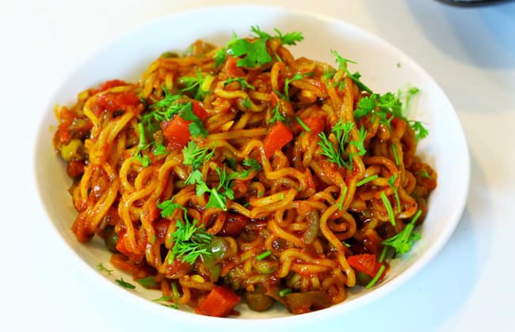

Maggie
Home

Ingredients:
- 1 packet Maggi noodles (with the tastemaker)
- 1 tablespoon oil or butter
- 1/4 cup onions (finely chopped)
- 1/4 cup carrots (thinly sliced or diced)
- 1/4 cup bell peppers (finely chopped)
- 1 green chili (optional, finely chopped)
- 1/2 teaspoon garlic (minced)
- 1/4 teaspoon red chili powder (optional, for spice)
- 1/4 teaspoon turmeric powder
- 1/2 teaspoon soy sauce (optional, for umami)
- 1/4 cup water (for cooking)
- Fresh coriander leaves (for garnish)
- Lemon wedges (for serving)
Steps:
- Boil the Maggi noodles in 1.5 cups of water for 2 minutes until slightly undercooked. Drain and set aside.
- Heat oil or butter in a pan. Add garlic and sauté for 30 seconds.
- Add onions, green chili, and sauté until onions turn translucent.
- Toss in carrots and bell peppers. Cook for 2-3 minutes until slightly tender.
- Sprinkle turmeric powder, red chili powder, and the Maggi tastemaker. Mix well.
- Add soy sauce (if using) and stir to combine.
- Add the boiled Maggi noodles to the pan. Toss everything together for 1-2 minutes.
- If the mixture feels dry, add 1-2 tablespoons of water to loosen it up.
- Turn off the heat and garnish with fresh coriander leaves.
- Serve hot with a squeeze of lemon for extra zing!